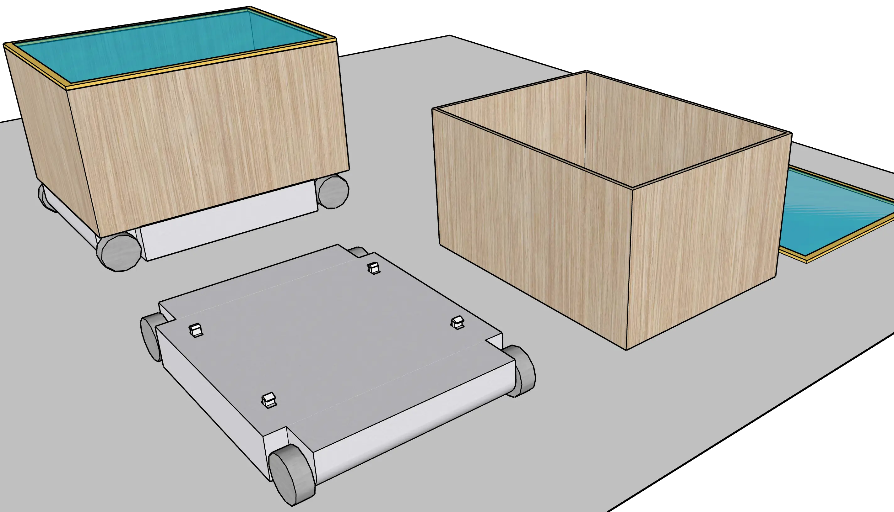
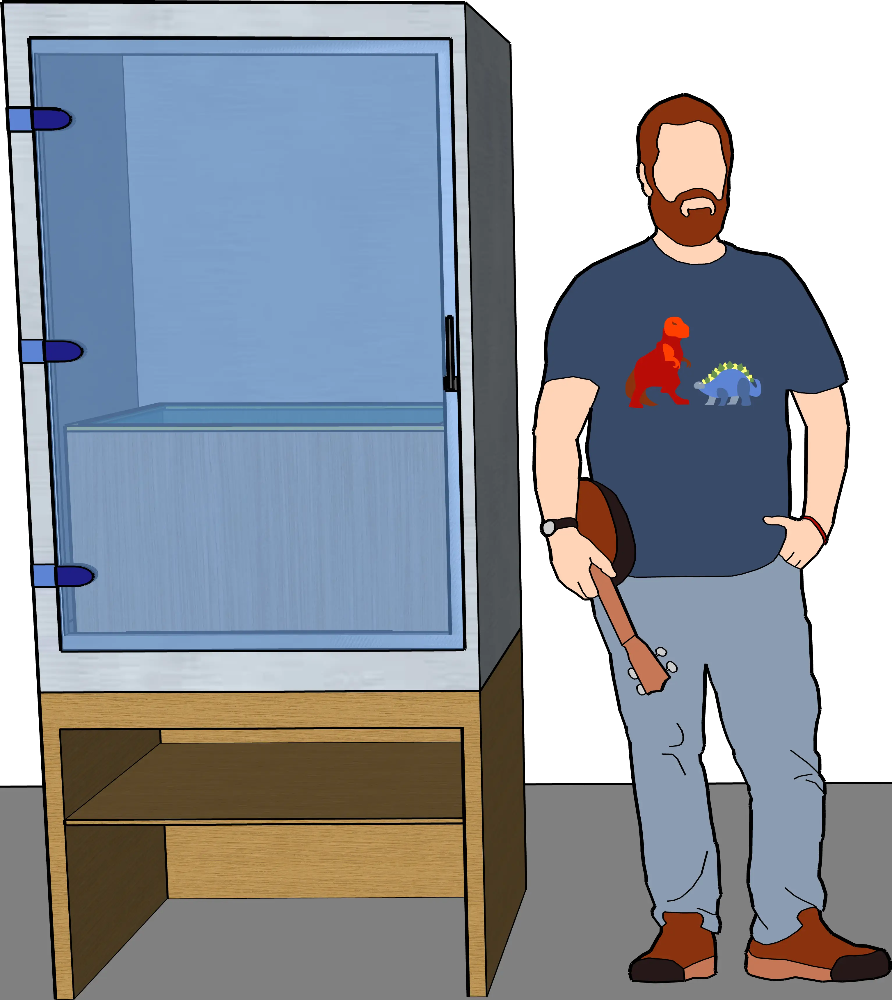

8. Infrastructure
8.4 Water, Power, Internet, Capsulenet
There is some infrastructure for which it is absolutely impractical to provide multiple parallel versions. Since a monopoly is unavoidable, this infrastructure should be owned by the state, in order to ensure fair access for everyone and, through that, competition.
Infrastructure networks already implemented like that today include roads, railways, electricity, drinking water, and wastewater. It would make no sense to build roads and railways multiple times in parallel, or to lay copper cables or pipes several times under the same street. Therefore, a single state-managed network exists in each of these cases.
Water supply and wastewater disposal should be genuine monopolies. The state should not only provide the pipe network, but also supply it with drinking water and handle the disposal of wastewater.
Because not all water is the same! If drinking water contains harmful germs, toxins, or microplastics, the potential for damage is huge.
Allowing multiple providers to feed water into the pipes, where it would then mix, would be irresponsible. And a private monopoly is likely to be worse than a state one.
Given the small amounts that drinking water actually costs, I would therefore clearly prefer the state’s thoroughness over the cost minimization of private companies here...
While the direct risk posed by wastewater is lower, the indirect risk is all the greater. We want to be certain that nothing contaminates our groundwater because a private company cut corners.
As the scope for competition is quite limited (wastewater from different households mixes before it is extracted from the pipes again, and pipes must always be emptied by someone to prevent clogging), I would have wastewater treatment carried out directly by the state as well.
With electricity, by contrast, the state can limit itself to the role of network operator. Electricity is electricity; electrons are indistinguishable. Unlike water, the costs here are not negligible, and strong competition between companies ensures lower electricity prices for everyone.
With the internet, by contrast, every company still lays its own cables under the street today—which, in my view, is terribly inefficient. Fiber is fiber: nothing more than a transmission medium, comparable to copper cable for electricity. Which network devices send light modulated in which way through these cables? That can change again and again, without requiring the cables to be relaid.
I therefore propose regulating the internet in the same way as electricity: The state manages the network and charges a usage fee for it. Companies receive money from their customers for having a network device connected at the other end of the fiber cable that forwards their data to and from the internet at high speed. In this way, the combination of a unified network and strong competition among providers ensures fast internet at low prices.
Because the state is responsible for all of these networks, it can combine the laying of cables and pipes with other road work and thus avoid duplicating effort.
The state doesn’t need to generate profits from usage fees either, since it benefits overall when there is clean drinking water, affordable electricity, and fast internet (as this improves public health and increases the country’s economic growth).
The normal operation of this infrastructure—water, electricity, and internet—is one side of the story. The other, more interesting side is its robustness in the face of problems, especially large ones that occur only rarely. As long as a disaster has not yet happened, there is no pressure from voters on politicians to do a better job here.
This is therefore where I see the greatest potential for improvement; to do better with smart infrastructure design than we are doing today.
With water, these problems are at their least severe. Water supply is always a regional matter. A problem will therefore always be spatially limited, and the state can concentrate emergency measures—such as deploying drinking-water trucks—exactly where the problem occurs. Moreover, when a problem arises, not everything comes to a halt immediately: life continues while experts repair water pipes or a water or wastewater treatment plant.
The most obvious way to mitigate problems with the water or wastewater network is to always have multiple water and wastewater treatment plants in each region, so that the failure of any one of them does not immediately become a critical issue. More generally, sufficient overcapacity should be maintained so that outages can be absorbed well. Here it is helpful that these facilities are state-owned and therefore not locked in mutual competition that would prune away all reserves.
Drinking-water reservoirs and wastewater holding tanks can also help by creating a time buffer before a failure leads to problems for the population.
The power grid is the exact opposite: It is not regional (all of Europe shares a single interconnected grid), supply and demand are carefully balanced at every moment, and when a failure occurs, public life comes to a standstill immediately. Even a brief power outage leads to numerous emergencies, such as elevators getting stuck. After several days without electricity, we would see looting in the streets.65
And to top it all off: because this network is so enormous, we have very little practice in what to do if it fails and we have to bring it back online.
Of course, there are emergency plans for such situations, but hardly anyone has ever tested them in practice. There are therefore justified fears that it could take much longer than expected for everything to function again. And by then, immense damage may already have occurred.
With the internet, we have not yet reached such a high degree of dependency. An outage there is also not an all-or-nothing event; much more often, a single service fails or some users lose access, while it continues to work for others. Because such partial outages occur repeatedly, we are far better prepared for problems with the internet. We simply have more practice dealing with them.
In addition, the internet protocol as a whole is designed with robustness very much in mind and is continually improved in that regard. I am therefore far less concerned about a total internet outage than about a large-scale and long-lasting power outage.
Let’s first briefly discuss how the state can encourage homeowners and tenants to prepare for water or power supply problems themselves.
Wherever possible, individual buildings should generate electricity for their own use using solar collectors. In the event of a power outage, this would provide residents with at least some electricity for their apartments, fluctuating with time of day and with sunlight.
Each apartment should be equipped with accumulators (battery storage) so that, even in the event of a power outage, there is a reserve that residents can allocate themselves. This reserve can then be recharged whenever the building’s solar collectors generate electricity.
The state will not force landlords to install solar collectors on the roof and accumulators in the apartments. What it can do, however, is make a traffic-light rating for apartments mandatory, indicating how well the apartment is prepared for power outages. Since anyone looking for an apartment will receive this information, it will influence housing choices. Such market-based competition will, over time, lead to more flexible and better outcomes than rigid rules imposed by the state.
Just as there is a traffic-light rating for the robustness of an apartment’s power supply, there will also be a corresponding rating for water supply. In the case of water, however, this does not depend on solar collectors and battery storage, but on rainwater collection from the building’s roof and on water storage tanks for non-potable and for drinking water within the apartments. Here too, a mandatory traffic-light rating ensures prospective tenants take this feature into account in their decision-making.
It would be rather sad if my proposals amounted to nothing more than urging citizens to prepare better on their own. We want to solve such problems as a society!
Don’t worry, I have more far-reaching ideas. The futurity I am developing in this subchapter does not aim directly at making the power grid more stable. Instead, I want to approach the problem from the side:
I want to present a concept for a new piece of state infrastructure that does not yet exist. And in the course of designing it, paths will open up to make both the power grid and the internet more robust.
This new infrastructure network is the automatic transport of goods in standardized boxes.
In the following explanation, I will call these boxes “capsules”, and the entire proposed infrastructure the capsulenet.
The technology of teleportation is presumably physically impossible. And manufacturing any desired object locally at the push of a button is still far-future technology. But fast, fully automated, and inexpensive transport of objects would provide many of the same advantages, with far lower technological requirements.
Let’s consider the following scenario: Someone orders a meal from a restaurant for delivery. At present, this means that a driver is on hand who loads the box with the food into their vehicle once it is ready and then drives to the customer. There, they ring the doorbell, hand over the food, and collect the payment.
So this required working time on the part of the driver, the goods had to be received personally at the door, and an additional vehicle increased the load on the streets (including accident risk, noise pollution, and so on).
If both the restaurant and the customer are connected to the capsulenet, the scenario instead unfolds as follows: The customer orders the meal, the restaurant prepares it and places it into a capsule that is ready and waiting. The capsule then moves autonomously through a system of tubes to the customer. The customer opens the capsule and removes the meal. Payment for the meal is handled separately (for example via a service provider’s app). Compared to the driver-based scenario, no one’s working time was required for delivery, there was no personal handover at the door (the capsule arrived directly in the apartment via tube, like a water connection), and no additional street capacity was used (the capsule was moved underground in a tube).
What does such a capsule look like? It consists of two parts: a standardized box (the capsule itself) with dimensions (L×W×H) of 80cm × 60cm × 44cm66, and the detachable capsule carriage. Two of these capsules together thus occupy exactly the footprint of a Euro pallet.
Other dimensions would of course be possible. This is a trade-off between being able to transport more objects (with larger capsules), and increased energy and space requirements throughout the entire capsulenet, which in most cases would be spent transporting additional air.
External dimensions, holes and recesses, a readable chip with information about the capsule, mechanical minimum requirements (resilience): these aspects are pre-specified. The lid mechanism and the internal design of the box, by contrast, can vary depending on requirements.
The capsules should help save a significant amount of packaging: shipments do not need to be placed in an outer cardboard box, as the capsule is used again and again. There will be standard capsules provided by the capsulenet, which can be used in many ways through optional interior fittings. Alternatively, privately owned capsules can also be used, for example if a business has higher requirements for robustness or security, or wishes to separate the capsule from the carriage.
The capsule carriage, into which a capsule can lock, always belongs to the state and is part of the provided infrastructure. The carriage contains the wheels, sensors (for example GPS and acceleration sensors), a microchip, the wheel drive, and the battery. The capsule carriage can communicate with the capsulenet via Wi-Fi in order to be controlled, queried for sensor data, detach from the capsule, and so on.
Once a capsule carriage has arrived at its destination, it communicates this mechanically and electrically to the capsule, so that there are many good ways to unlock the capsule as a result.

Every location connected to this network (apartment, office, …) has an end device in which capsules can arrive and be loaded and unloaded. Similar to a stove, a washing machine, or a mailbox, this device will become important enough to deserve its own name. I will therefore refer to it in the following as a capsule port.
If a capsule is attached to a capsule carriage, the carriage can only detach from it when it is currently inside the capsule port of the capsule’s owner or in a loading station (since standard capsules belong to the state, they can therefore never be detached from the carriage inside a capsule port).
Inside the building there will be an additional small lift for transporting capsules.67 The individual apartments on each floor are connected via a shaft running below the ceiling.68 From there, capsules are lowered into the capsule ports.
Inside the capsule port, capsule carriages can be charged with electricity. In return, the owner of the capsule port receives slightly more than the price they themselves pay for the electricity.

The connection of a building to the capsulenet is underground, and within towns the capsules travel through tubes beneath the streets.
Beneath each street run two such tubes, one for each direction. There are regular cross-connections between the two tubes, so that a defective capsule can be bypassed if necessary (similar to a one-lane road closure with traffic-light control).69
Mounted to the ceiling of one of the two tubes is a 380V cable (as described in Chapter 8.3, with a sufficiently thick power conductor pair to minimize transmission losses), which connects PD bases installed at each cross-connection between the tubes. These have the same hardware as the PD bases used in apartments, but different software. They use their Wi-Fi chips to communicate with the capsules and, taken together, form the control system of the capsulenet.
Power and internet connection: In the other tube, a fiber-optic cable runs along the ceiling (supplying buildings with high-speed internet) and, where necessary, a power cable carrying 20kV alternating current (medium-voltage grid*).
Whenever required, a converter is located next to a PD base, converting this alternating current into 380 V direct current and feeding it into the capsulenet. Here, one will have to balance the cost of the converter against the transmission losses resulting from the lower DC voltage.
Both the alternating-current and the direct-current networks are designed as rings or meshes. This allows them to tolerate the failure of a single cable segment without causing a power outage.
Close to each of these PD bases, there are parking and charging stations for several capsule carriages, as well as an access point from the street for maintenance (lockable). Since the capsulenet knows for all capsule carriages where they are headed and what their battery charge level is, it can easily ensure that they are charged at the stations in good time and do not run into range issues.
PD bases can easily be replaced with newer models from this maintenance access. The tubes themselves are also accessible from here. Using a small sled, a person can enter these tunnels lying down, for example to replace a defective cable, without having to tear open the street.
Flood protection: To prevent incoming water from rendering the capsulenet unusable, all access points to the tubes (maintenance access points as well as the transitions where capsules enter buildings) should be protected against water ingress.
In addition, there should be sensors in the tubes that detect water and can automatically close bulkheads if water enters through an access point. Since the bulkheads are remotely controlled, they can easily be tested regularly to ensure they still work (to avoid discovering a defect only in an emergency).
If both of these precautions fail, the fire department can of course pump flooded tubes empty again. But if it comes to that, a section of the capsulenet will be out of service for a while (if the water level was high enough, all PD bases on the tunnel ceiling will likely have to be replaced as well)…
In the parking and charging stations, capsule carriages wait to be used. Compared to centralized depots, this has the advantage that the average approach distance for a capsule carriage is shorter. These spaces can also be used by capsules that are close to their destination but whose target capsule port is currently occupied (alternatively, capsule parking spaces can also be provided within a building).
The public capsulenet ends at the underground entrances to individual buildings. The capsules can, however, also communicate with the PD bases inside the building, thereby transmitting their position and data to the capsulenet and receiving commands.
Power supply robustness: Along the ceiling of the capsulenet tube leading into the building, the power supply is installed as well, in the form of a 380V cable.70 The electricity for this is either converted locally from 20kV alternating current (the 380V cable passes through a PD base of the capsulenet so it can also be used as a data line), or it comes as a separate 380V cable from a nearby converter if that is cheaper than placing the converter directly at the branch to the building (or if no 20kV power line runs here at all).
We now have all the puzzle pieces needed to talk about the robustness of the power grid. Let us go through the various possible power outage scenarios:
1. There is a shortage of power (for example due to a prolonged period of low wind and little sunlight), and the load must be reduced:
In addition to agreements with industry, as already exist today, the power grid can access precise information on how price changes will affect electricity consumption in private households. This information is transmitted from the PD networks of apartments, via those of the buildings, to the capsulenet (and in the opposite direction, the current electricity price).
If price changes and industrial contracts are not sufficient, individual consumers can also be disconnected from the grid via PD bases. This is still better than the power grid collapsing due to overload.
In these ways, the entire system can respond much more effectively to changes in power supply. Because of a higher feed-in price, apartments can also decide to feed electricity from batteries (or solar panels) into the capsulenet. The capsulenet then has to convert less electricity from the medium-voltage grid and thus reduces overall demand. In this way, power can also flow from one house to another at 380V (within the capacity limits of the single cable used by the capsule network).
2. The medium-voltage grid is disconnected from the high-voltage grid, either due to line damage or because the high-voltage grid is unstable:
Every medium-voltage grid must be able to operate in island mode, that is, without connection to the rest of the interconnected power system. For that, it must be able to ensure disconnection from the high-voltage grid to avoid being unintentionally reconnected. There should be multiple feeding power plants to provide redundancy and sufficient supply to the grid. These feeding plants must be able to generate the alternating-current frequency themselves, rather than merely following it.
Above all, it must be ensured—through price changes and, if necessary, forced shutdowns—that demand does not exceed supply (conversely, power plants must be able to reduce their output if they would otherwise produce too much). The same mechanisms as in the first scenario can be used here.
As soon as the high-voltage grid becomes available again, the frequency of the local grid is synchronized, and it reintegrates into the power system.
3. The medium-voltage grid is unavailable for whatever reason (e.g. because both the high-voltage grid and island operation have failed):
There is still a certain amount of electricity from local generators being fed into the capsulenet at 380V. This means that at least the PD bases still have power, a local data network is active, and a backup internet connection via satellite exists (with correspondingly limited bandwidth). Depending on circumstances and available power, fast internet may still be available, and capsules may even continue to operate (at a higher price).
The capsulenet will provide houses with a very small amount of electricity, proportional to living space (at a price already much higher than normal). This is possible because, after conversion from the (unavailable) medium-voltage grid, the power supply to the house always passes through a PD base. That base can therefore feed its own electricity from the capsulenet into the house.
Whatever remains can be auctioned off by the network to the highest bidder.
Because feed-in prices will be very high in this scenario (especially at points in the network where little power is fed in—when transmitting over longer distances at 380V, line losses add up significantly), there will be more feed-in than usual from private batteries and solar panels.
Especially in this scenario it pays off that, in a local PD network, power shortages are not all or nothing. The apartment network will continue to supply the most important and most frugal devices with the available power (unless one opts out for cost reasons).
As these scenarios show clearly, the power system responds far more intelligently to problems than simply collapsing completely. Yes, there are restrictions. But in this system, it should be quite possible to avoid disasters and, above all, to keep societal communication running at all times. Because the exchange of information makes it possible to solve problems quickly and effectively—and to prevent panic.
At the transition from the capsulenet into a building, the final segment of tube that is under public administration contains a measurement station (directly after the branch from the tunnel running beneath the street). This consists of cameras on the ceiling, the sides, and the floor, a reader for the chip built into the capsule, and a scale. The cameras photograph every passing capsule and upload the photos to the capsulenet. The same applies to the capsule’s weight as measured by the scale.
These data serve documentation and troubleshooting purposes if something unusual happens to a capsule (e.g., if a capsule is damaged or something goes missing). Using the chip and camera data, it can also be checked at this point whether the capsule meets all requirements, so that the capsulenet is not put at unnecessary risk. Comparable measurement stations also exist at the entrances and exits of all loading stations. This means that every capsule is weighed and photographed from all sides both before and after every transport involving another vehicle or rail car.
The standard capsules provided by the capsulenet are equipped with a transparent lid. As a result, these photos also document the state of the capsule’s interior at different points in time. If a capsule is not returned to the network clean, it will be sent for cleaning—the cost of that will be billed to the last user. And of course, in disputes between sender and recipient it can be very useful if photos exist showing which content was in the capsule when, and in what condition.
For private individuals, simple foldable interior liners for the standard capsules will become common. They help ensure hygiene and cleanliness of the transported contents, and they ensure that no cleaning costs have to be paid for the capsule. Businesses, by contrast, will use interior liners that are perfectly matched to their application and that they can fill before placing the entire liner into a standard capsule.
Capsule carriages will not be particularly fast. Which means that travel between towns—or long distances within a large city—would take them too long.
For capsules headed to a more distant destination, there will be loading stations in every town. Within such a loading station, the capsule is detached fully automatically from its capsule carriage and loaded into a waiting autonomous vehicle that heads for the desired destination. These vehicles operate at high frequency, so that each capsule only has to wait a few minutes until the vehicle it was loaded into departs. This short wait is more than offset by the vehicle’s higher speed. At the unloading location, the capsule is then picked up by a new capsule carriage and transported onward to its destination. Because the capsule carriages are not transported along with it, both volume and transported mass are reduced, and fewer capsule carriages are needed overall, saving costs.
For even greater distances, transport by train is also possible, following the same pattern. The state-operated rail lines include a rail car for this purpose, and every train station is equipped with the infrastructure to load and unload it pallet by pallet very quickly each time the train stops.
These vehicles and rail cars are likewise connected to the internet and the capsulenet via cellular networks or satellite. Since the capsulenet knows which capsule was loaded into which vehicle, it still knows the location of every capsule—even though no capsule carriages are attached to them.
One task of the capsule port is to allow only expected capsules into the apartment and otherwise keep access sealed off. For this and other security reasons, each capsule port has a transparent protective door facing the apartment (comparable to an oven door). Only if the user sees what they are expecting through the glass will they open the capsule port (it cannot be opened from the inside or open automatically).
As soon as an approaching capsule has to decide whether to park temporarily or go directly to the capsule port, the empty capsule port locks its door and announces the arriving capsule (sound, light, app notification, …), maybe visibly counting down the seconds until arrival. The capsule port also always reports whether (and if so, how many) capsules are currently waiting at the nearest parking and charging station for the capsule port to become free.
Once a capsule has arrived in the capsule port, the user opens the protective door, removes the capsule’s lid, takes out the contents, reattaches the lid, and closes the protective door again.
Each capsule port is equipped with a touchscreen. On it, the user now indicates that they are finished with the capsule. If the capsule is privately owned, the carriage returns to the point of origin to bring it back. If it is a standard capsule, the network uses the weight measured by the scale and the photos through the transparent lid to decide whether the capsule is empty. If not, it returns to the sender. If it is, the carriage and capsule are immediately ready for reuse.
Standard capsules also park in the parking and charging stations, in their own designated areas. Capsule carriages can drive underneath them, latch on, and tow the capsule along (and can also reposition capsules there in the same way). This way, no motor or other mechanical system is needed for that, which would in turn have to be maintained.
This is how sending a shipment with a standard capsule works:
1. You press the “Provide capsule” button on the capsule port, which calls a capsule carriage and a standard capsule from the nearest charging station. For cost reasons, they will not be standing by and waiting in capsule ports.71 The capsule port door locks.
2. On the touchscreen, you select the destination the capsule should go to. Only once the other side confirms this will you be able to send it. This approval can also be granted in advance, and it can be permanent.72
3. As soon as the capsule and carriage have arrived, the protective door can be opened again and you can load the capsule.
4. You close everything and send the capsule on its journey using the “Send capsule” button. Either the capsule heads directly to the destination, or it is temporarily loaded onto a vehicle and/or a train.
5. Near the destination, the system checks whether the destination capsule port is free. If it is currently occupied, the capsule waits at the nearest parking and charging bay until the capsule port becomes available.
6. Once the capsule has arrived in the destination capsule port, that capsule port is occupied by it and cannot be used for anything else.73
7. By pressing the “Send capsule” button, the user of the destination capsule port signals that they are finished. The capsulenet checks whether the capsule is empty (in a measurement station, using the scale and photos through the transparent lid). If it is, the carriage and standard capsule can be used for new orders. Otherwise, the capsule returns to the sender.
In short, this infrastructure corresponds to the parcel delivery services that exist today. But these parcels are limited to exactly one size, which allows this entire system to work completely automatically. As a result, it is far faster, more cost-effective, and equipped with more capabilities than existing parcel services.
Example usage scenarios:
• Delivery of prepared meals: Comparable to existing delivery services for pizza and other restaurant meals—except that delivery is faster and cheaper here. And it can be done entirely without packaging waste: the customer takes out the meal, transfers it from the container onto plates, puts the empty container back into the capsule, and sends it back. Once it returns to the restaurant, the container goes into the dishwasher and can be used again afterward.
• Delivery of groceries: Comparable to delivery services that already exist, but fully automatable. A robot can load the capsule in a warehouse, and the capsule finds its way autonomously. At no point is an employee involved. This means such an order not only causes lower costs, but can also be placed at any time of day or night. And since the capsulenet can always tell exactly how long any capsule will be in transit (with only a few minutes of variation if a vehicle or a train is used), the customer gets to estimate the arrival of their order very precisely. If the warehouse and the customer are in the same city, this delivery time will regularly be under an hour.
• Washing laundry: Why should every apartment need its own washing machine? Instead, simply send dirty laundry by capsule to the laundry service of your choice, including selection of the wash program. Later, back comes the washed and dried laundry. Perhaps even already closet-ready folded.
• Private lending: The capsulenet can be used to lend things to each other. Just as I can now knock on my neighbor’s door to borrow something, with the capsulenet I can call a friend who lives in the same city and ask for help. They pack what I need into a capsule, send it off, and shortly afterwards it arrives at my place. The price to send a capsule within a city will be only a few cents. Greater distances are of course possible as well, but then it takes longer and costs a bit more.
• Classifieds: Items can be sold privately more easily. Packaging becomes unnecessary (everyone has cardboard pieces to divide a capsule into compartments of different sizes), shipping is fast and cheap, shipping documentation is created automatically, and destination addresses can be pulled from an app or browser. If this allows fewer items to be thrown away and bought anew, that saves money and resources, and it conserves the environment.
• Lab samples: In Chapter 6 (“Healthcare”), we wrote that samples should be transported quickly from doctor to medical lab by courier or drone, so that the doctor can continue working with the results on the same day. With the capsulenet, we need not make any such special provisions—this system provides such fast delivery times by default.
• Garbage pickup: Request a capsule from the waste disposal company, fill it with garbage bags, and send it back. This means garbage no longer has to be carried downstairs, emptying trash bins takes no labor time, waste separation and charging based on the waste produced are easy to implement.
Since there are tubes for the capsulenet under all streets in towns, and access points are installed in all of these tubes (in the form of PD bases), it makes sense to make double use of the Wi-Fi infrastructure this creates. In addition to the Wi-Fi network with which the capsules communicate, there will be a second network that all citizens can access (it is possible to run two Wi-Fi networks in parallel this way without additional hardware).
This Wi-Fi provides access to the internet. Maximum speeds will be clearly limited so that no single device can steal too much bandwidth from others. But still, the capsulenet provides free internet on all public streets as a byproduct. Segmentation into two networks—one for the capsules and one for the public—ensures that capsules have priority if bandwidth becomes tight.
In Chapter 3, we noted that our futurities should be robust. The whole concept of a capsulenet may sound very fragile. Don’t worry: it isn’t.
The PD bases are the nodes of the capsulenet. Cameras are connected to each of them to monitor their section of the capsule tube for problems.
There is no central server room that controls the capsulenet as a whole. Instead, each node contributes a small part. These nodes communicate with each other and thus maintain a dynamic picture of which destinations are reachable and how. Every street intersection has such a node. It connects the capsulenet’s 380V cables from all four directions and routes power and data packets.
The structure of the local capsulenet is therefore not hierarchical, but a mesh. It is connected (including via satellite) to the internet, and through that to parts of the capsulenet in other towns.
If the connection to the internet is lost, the nodes can only see the local capsulenet—the other nodes in the same town. So only destinations within the same town are reachable. But within this area, the capsulenet continues to function.
Public Wi-Fi access is still useful even when access to the broader internet is cut off: it allows communication with other devices on the same network and thus enables the town to organize in an emergency.
And even if there is damage within a local capsulenet: no matter how part of the network is cut off from the rest, it will always have a number of capsule carriages appropriate to its size, because the capsule parking and charging bays are located at the nodes. Communication within each subnetwork continues to work, and if nodes from different subnetworks can see each other by Wi-Fi, they connect and enable communication between the subnetworks.
The software running on the capsulenet’s PD bases is a wonderful example of software funded by society (see 8.1). If the state develops the software as open source, then in addition to the basic functionality for sending capsules, other functions society considers useful can run on these devices as well.
Examples:
• Accessing basic information about the capsulenet for anyone: Which other nodes does a PD base see, how many capsule carriages are in the network, how high is utilization?
• Software for finding all information about other devices in the local capsulenet that they have published about themselves. This could include, for example, their location or services they offer.
• A decentralized* chat software (à la Mastodon74), that enables local communication even without the internet.
• A cache (buffer storage) for internet data that is accessed particularly often or considered important by society. This data would still be available even if the connection to the internet is interrupted.
The PD bases of the capsulenet are small general-purpose computers distributed under all streets. They have extremely limited computing capacity (because that costs power), but useful amounts of storage (SSD, RAM) and a very robust connection to one another.
If society is able to use this potential, these nodes can turn into a mesh of computational capability. A private company would never build something like this in this form, because there is no profit motive. For a society, by contrast, an extremely high benefit emerges from a modest expenditure.
Because we first create the PD system with its PD bases and 380V cables for the private market, companies have an incentive to develop ever better hardware. Now, the state can use that hardware to keep improving the power and data network of the capsulenet.
The capsulenet provides towns with a minimum of power and communication if the infrastructure actually responsible for that fails (the medium-voltage grid and high-speed internet via fiber-optic cables, respectively). Even if the capsulenet were to temporarily lose its power supply, it—and all its additional capabilities—would start back up immediately as soon as it receives power again (thanks to local power generators).
Since this network runs entirely underground within villages and cities, it makes them far more resilient than if they had no capsulenet.
Review of Requirements